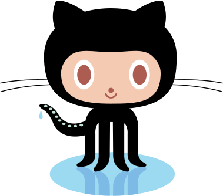

Rebuilt 1:1 from gist:christophermanning/4460135/octocat.svg (raw svg): black cat (#000, 3 whiskers/side in silhouette), peach face #F4CBB2, white eyes + rust pupils #AD5C51, nose/mouth #AD5C51, 9 suckers #C3E4D8 + blue droplet #9CDAF1, puddle #9CDAF1 + shadow legs #7DBBE6. The four limbs and the tail curl are cut out of the original path and re-hung on hinges, so they move without a single coordinate being redrawn.

Reference (left) vs animation (right) - the same art: black #000 silhouette (hood + ears + 3 whiskers/side + 5 tentacles), face path #F4CBB2, white eye ellipses + rust pupils #AD5C51, nose circle + w-mouth arc, 9 sucker ellipses #C3E4D8 along the left curl, teardrop droplet #9CDAF1, puddle ellipse #9CDAF1 + two shadow-leg paths #7DBBE6 - copied verbatim from the gist (viewBox -0.2 -1 379 334). At rest the rigged cat matches the reference to 0.06% of pixels, all of it sub-pixel edge anti-aliasing. Walk: a real lateral-sequence quadruped cycle - left hind, left fore, right hind, right fore, a quarter-cycle apart, each paw planted two-thirds of the time. Hands and feet lift in that order, the body drops onto each paw as it takes weight, and the tail counter-swings against the sway.
▶ animation - lateral-sequence walk, strolling across
reference - octocat.svg (gist)
80 px/s
Space pause · S stroll · F direction
What animates: the four limbs are real hinged parts, extracted from the single closed path that draws the whole cat and re-hung at the hip line - so both hands and both feet lift, swing and plant in the lateral-sequence order LH → LF → RH → RF (phases 0, ¼, ½, ¾, duty factor 0.66), each plant ringing the puddle. The tail curl is hinged at its root and counter-swings against the body's sway, carrying the 9 suckers with it while the droplet trails behind on its own lag. Body bob runs at 4× the cycle (weight landing) over a 2× couplet swap, plus roll and sway onto the loaded side. Whiskers flare on each footfall; eyes blink every 2.4–5.4s. Every limb move turns about its own hip, the one point that must not shift: planted paws counter-rotate to stand still while the body sways, and a swinging paw lifts by foreshortening along its own axis rather than sliding upward - either slide would step the leg out of the socket it fills. A round joint under each shoulder keeps the hip line smooth however far the limb swings. Speed 0 = stand and breathe; stroll drifts across the stage with edge bounce and never mirrors.
Second cat - washing its face
Same exact Octocat, same rig - now grooming. The outer left forepaw comes up off the water to the muzzle, the tongue flicks out onto it, and the paw wipes up over the cheek and back. A single rigid limb cannot reach from the hip to the muzzle, so the arm stretches along its own axis on the way up; the shaft is hidden against the black chest, so only the paw shows. Eyes squint while it works, the other three paws brace, the tail sways and flicks when the wet paw hits the puddle again. The shoulder turns on a round joint, so the arm stays smoothly joined at the fold even at full reach. Loop: settle → raise → lick ×3 → wipe ×2 → lick ×2 → wipe → lower → tap.
Groom loop auto · Space also pauses top catCatGroom - reaching forepaw + tongue + squint
Third cat - saying hi
Same exact Octocat, same rig - now waving. The rightmost hand comes up out of the water, with a “Hi!” bubble and a wink on the way through. Ears prick right up, whiskers fan forward, the mouth widens, and the tail whips on the same beat as the paw. Loop: idle → raise → wave → lower → idle.
The arm is a two-bone rig, not one rigid segment. A limb hinged only at the shoulder sweeps as a board - and the shape on its end is a foot: the paw in CAT_D hooks outward and downward, right for standing in a puddle, but swung up through ~140° it curls back over itself and finishes the arm as a candy-cane. No shoulder angle fixes that. So the free limb splits at L.elbow into upper arm + forearm - both the same limb <use>, each clipped to its side of the line and overlapped by ELBOW_LAP - with an elbow disc filling the wedge a bend opens (the rig’s joint-disc trick, applied at the elbow), and a mitt at the wrist that swallows the paw hook.
Two constraints fall out. The stretch goes on the bones, never on a shared ancestor: a scale(1,k) above a rotated forearm is a shear and turns it into a wedge, so move carries rotation only and each bone scales along its own axis. And the mitt hangs outside both scales, so reach never stretches the hand - the thing the old single-bar arm could not avoid. The target moved too: a bent chain is shorter end to end, so keeping the old (288, 206) would have cost k 1.355 instead of 1.289. At (272, 190) with a 28° elbow it is 1.249 - less stretch than the straight arm used - the elbow lands at (255.6, 218.5), 21 units clear of the body so the bend actually shows, and the hand sits nearer shoulder height. The beat is one driver read at three delays (shoulder, then forearm, then wrist), which is what makes the wave travel outward instead of the arm swinging rigidly - the same principle as the tail’s whip. At rest every sub-transform is identity and the halves reassemble into the original limb, so CatGroom’s reach is untouched.
waving - paw up · four beats · “Hi!” · wink · ears up · tail whip
Wave loop auto · click 👋 to greet on demandCatWave - swinging forepaw + bubble + wink
Fourth cat - plumber waving
Same rig, Mario plumber theme, now matched to the reference on the right by measuring it rather than by eye. The JPEG was mapped into the rig’s viewBox using two anchors - the whiskers span the full image width (svg x 0.007..378.46) and the artwork’s full height is svg y 0..332.6 - giving x = px/2.368, y = (px−50)/2.38. Every colour below is a sampled pixel and every shape is the per-column extent of that colour’s mask.
What the comparison turned up: the torso was black - the reference’s red shirt starts at y 185.7, and by y 182 the silhouette has already narrowed from hood width (x 111..269) to shoulder width (x 149..235), so a straight cut at COLLAR_Y 184 lands on the jaw line and repaints the body red while the hood stays black. The hat was a squat ellipse; traced off the red mask it is one elliptical arc (rx 125 ry 110.3) whose apex lands at y 0.8 - the same height as the ears’ own tips, which is what leaves both ears standing clear either side of it - over a brim sagging to y 100.8 at the lobes. The eyes were flat blue discs; scanning across y 126 gives sclera 125..160.5, blue ring 131.8..155.4, near-black centre 135.1..152, so a dark pupil at 0.72 of the iris was added. The tail’s suckers had been dropped entirely - the reference keeps them, in #A51A16. The palette was all slightly off: red #e53935→#E30203, blue #1565c0→#0A42AF, green #2e7d32→#01A03C. Overalls are now the measured shape - straps y 186..205, bib to y 243, legs split at x 186..192. And a real bug surfaced: the shaft filler rect was hardcoded #000, so every themed sleeve carried a black band from the clip line down to y 244.
Gloves, boots and the tail glove - these are tentacles. Each limb is a tube of near-constant width that curls outward and only narrows in its last few units. Measuring the true filled span per row (crossings of the closed subpath, not the outline’s min/max) gives 17.9 at the ankle, 18–23 through the curl, then 15.4 and 8.1 at the tip. The tail is the same: 8.8 wide 6 units back from its point, 15.8 at 24 back, along an axis of about 207°.
An earlier pass took the outline’s min/max per row instead, read that as a “broad flat foot” 31 wide, and fitted a covering blob to it - but that envelope is the span of the curl, not of the tentacle, so the shape was covering the empty air the curl encloses. Hence flat saucers. So a glove is no longer a shape fitted over the tip: it is the tip - the limb’s own <use> recoloured and clipped to a half-plane cut across the tube, perpendicular to the tentacle’s local axis (hands cut at u 3.0, w −11 at 28.8° off vertical; feet at u 2.8, w −13 at 22.6°; the tail 28 back from its point). It tapers exactly as the tentacle tapers, cannot leave the colour underneath showing, and needs no authored outline. The cut edge reads as the cuff, with a second copy 3 further along leaving a band of it visible.
Two consequences. The tail glove moved out of tailG into its own group after the suckers - the suckers draw over the tail, so a glove inside tailG had a sucker showing through it; setTail() now carries that group too. And the black cat’s waving arm lost the rounded mitt added earlier: that was a workaround for the same bad measurement, and it only flattened the tentacle’s taper into a blob. Its tip is now the same shape as its three planted limbs. Note the tail’s extreme point is (66.65, 178.99) - notTAIL_TIP (73.8, 176.0), which is just a point on the outline.
What still differs, and why: the reference is redrawn artwork, not this rig’s CAT_D. Its body is wider and its tentacle thicker. And its feet stand on the mushroom (shoes at y 261..281) while this rig’s paws plant into it at y 283..293, so the gloves and boots sit about 15 lower than the reference’s. That gap is not a styling choice: the paw positions are fixed by the limb subpaths extracted from the silhouette, and every way of forcing them up costs more than it buys - moving the cat clips its ears at the viewBox top, moving the mushroom clips its base at the bottom, and clipping the legs short leaves a hole in the masked silhouette that only a paw-sized shape can fill, which is the thing being replaced. Waving uses the same compound motion as the black cat (shoulder 3.5° + forearm 13° at 2.1Hz, each lagging the last).
Plumber waving - vector rig, same CatWave with themeCatWave theme:plumber - red/white/blue/brown/green
Fifth cat - plumber grooming
Same plumber, now grooming - the white-gloved forepaw lifts to the mustache, tongue flicks onto it, then wipes over the cheek. Uses the identical CatGroom reach logic (R.solveReach stretch + elbow tuck) as the black cat, just with plumber colours and the mushroom platform. The JPEG’s white glove and brown shoe match the vector limb tips; the green mushroom replaces the blue puddle.
plumber grooming - white glove to mustache · tongue · mushroom
Plumber grooming - CatGroom theme:plumberGroom loop auto - same script as black cat
Minimap demo - cat walks on the minimap
A pixel-matched minimap copied verbatim from public/styles.css:2983 and public/index.html:148 - width:104px height:50px, border-radius:10px, overflow:hidden (here overflow:visible for the cat). The octocat is scaled to 32px and its .cw-actor is anchored bottom:calc(100% - 6px), so its paws sit on the minimap’s top edge - the edge is the walkable platform.
The cat runs a small behaviour state machine on top of CatWalk, borrowed from three characters that live on other people’s screens. From Shimeji, the idea that a window’s top edge is terrain: reaching either end plays a peek over the edge before it turns back. From oneko.js, a distance threshold (its 48px, scaled here to 7px) before the cat bothers to chase the cursor - hover the minimap and it walks over to you. From the Claude site mascot, behaviour as scripted beats rather than physics. Its stops are the minimap’s own route dots, read live out of the <svg> at cx 28/52/76 - edit the map and the cat’s itinerary moves with it. States: patrol → inspect → peek, plus follow → greet while you hover.
One writer per property:CatWalk renders the gait, the behaviour layer owns left and transform. That needs ownPosition:false (cat-walk.js:75) - previously the rAF loop and this page’s CSS transitions both wrote left, so click-to-move was stomped within a frame and never showed. CatWalk also now takes theme, so 🎩 Plumber applies while walking, not just to wave/groom. To use on Mindspark: put the cat’s track inside #minimap in public/index.html:148.
minimap is .minimap 104×50 radius 10 - cat’s .cw-actor rides on top, bottom:calc(100% -6px)
Minimap cat - walk · hide · wave · groom · randomHover the minimap and the cat comes to you · click to send it somewhere